Procedural control flow
Mathematica also has procedural control flow (perhaps more familiar from e.g. Julia)
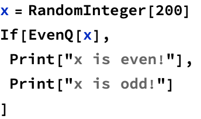

Which can be used for many if-else clauses
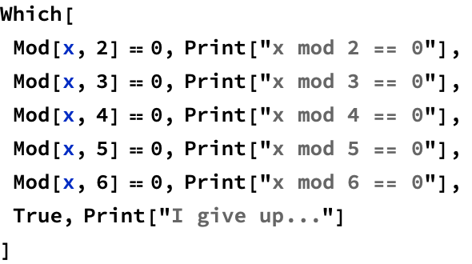
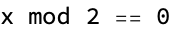
The simplest loop is the Do loop, which repeats the contents n times


We also have traditional for loops

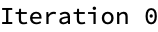


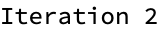
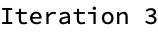

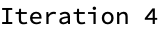


Application: merge sort
Merge sort is a recursive algorithm
Given a list, we:
1. find a midpoint
2. split the list at its midpoint into a left list and right list
3. sort the left and right lists using merge sort (recursion)
4. merge the two lists

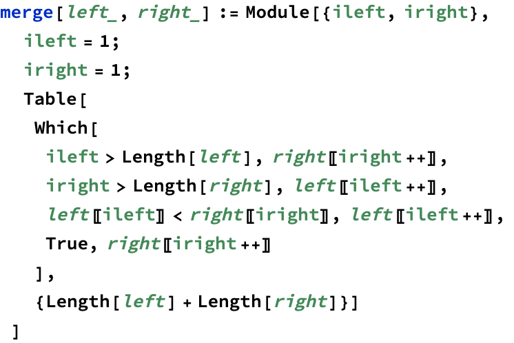


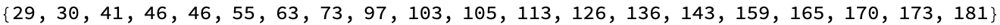
The runtime complexity of merge sort is given by the recurrence
t(n)=2t(n/2)+O(n)

The runtime complexity is n log(n)
Functional-style merge sort


Finding all primes less than n
Algorithm known as the Sieve of Eratosthenes
Choose a number n
We will find all primes less than n
1. List all numbers 2 through n
2. Starting with, p=2, mark all multiples of p, beginning with 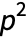
i.e. mark  up to n
up to n
3. Repeat step 2 with p the next unmarked number
4. Terminate when 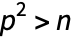


Let’s check our work...

We can also use a functional approach